Advanced Building Revue 06: Hubs
The fun, the creativity, the high league, the madness, the spaghetti, the mess, the weirdness, the braindisruptors. What else is so typical for our superior gaming style? Building hubs. In this article I am going to go into hub logics and techniques, examining some possibilities how a hub can be made. This article should help one realize what to think about and what to consider when building a hub. Note: This article expects you have proper building style as your blood group.

Introduction
Hubs are one of the most key thing in any OpenTTD game that isn’t just point-to-point but is actually meant to be fun. Everyone built hubs, everyone had trouble building them, but everyone solved these problems a bit differently. In the very beginnings, a common thought process is “hub … well hub has to be 4way!”…
If you look at public server games for example 01 and 186, I believe you will notice that something has changed. In the early times, we built 4way hubs. Although we do not use this anymore, I will point out a few interesting things about these. Look at the very structure of the 4way hub – you basically can’t unify it! Each line often goes quite differently based on how the builder’s style is, sometimes using roundabouts, whirpools, just mess and rarely the whole hub gets reversed. The point behind this is, that 3way hubs look basically all like “an ultimate 3way”. 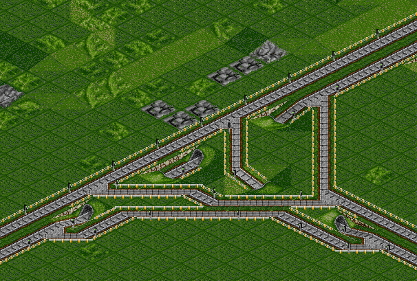
From there one could say “Well, what changed from that time when you still build the same design?” This is because long time ago, we focused on hub design. Now we focus on details, components, mechanisms, from which the hubs consist – which basically means: We care about proper building. Now if we return back to the beginning of this paragraph, we can see that using both “caring about design” and “caring about proper building” are just too much and the 4way hubs are becoming too large today :). A very nice example gives MZG04 and PSG 173 – Pile transport, where we tried to re-play an old game and you can see how large a normal 4way hub becomes there… but of course they work better with proper build style ;).

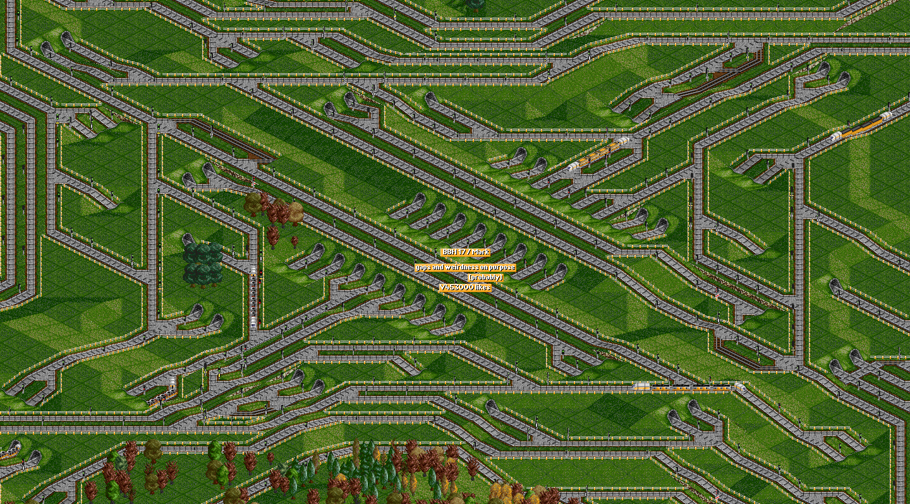
This is for me the ultimate 4way hub. Built by nobody else than Mark himself, see how the tracks swap in directions. This makes “the sweet-spot” much easier and compact to build. (More about sweet-spot further down in the article.) The only downside of this styled hub is that it gets huge with wider lines because of more complex balancers you usually want to use :(. Although in this form, it is a true masterpiece.

Hubs as puzzle
Because hub designs are nicely shown on OpenTTD wiki (from which we use only the “ultimate 3way”), I will focus only on the segments of hubs – mergers, splits, uses of tunnels and bridges, and some minor design issues such as the sweet-spot. As an example-vault I will be using one of my savegames, this time a special game-for-article. Downloadable right here :). (r20080)
Sweet-Spot
The hardest part of every hubs is where trains turn left. It is just like when you are driving a car, when you turn left, you cross everyone else. This is particularly evil in 4way hubs, but let’s put these aside. In a 3way hub you still need to solve this spot somehow. I highly recommend beginning the building of a hub with this spot – the centre of the hub, or at least make a planning how will it look. That way you reduce the possibility of “forgetting a connection” … which often results in some connections around all of the hub and so on. In the few following images I will show how you can solve this, with some commentary ;).
Out of the Hub
With this style one first gets outside the hub and solves the issues somewhere later. This is quite comfortable when you want to let the ML clear. (like when you do not want to tunnel it anyhow) Then you just swap the tracks when in safe position. This technique is very friendly for usage. 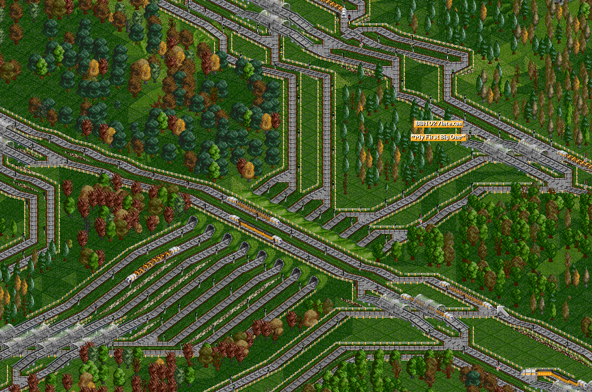
Demonstrated by Intexon in psg 173, BBH 02. (note that the hill disables sooner swap, otherwise it could have been smaller 🙂 )

Solve Inside
Here we can see how Jondisti just makes the line A and then crosses it with B. This saves you space behind the hub, while sacrificing some inside. 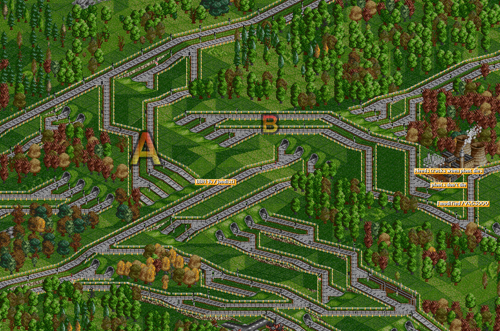

Clash Together!
This is a style where you just go one over another, using bridges and tunnels. Great way especially if you can make it all close together and keep compact, because the 3 levels of track atop of each other are like +50% than normal tunnel over track in terms of tracks-per-tile. (if you want to bother with numbers, note that with 3level it is 200% – 100% from the one track and 50% from tunnel and bridge, because they are doubled therefore have half value 🙂 but that isn’t important, just save space 😉 ) A nice example of this can be found in psg 186, MSH 03. Note how the hub is basically mergers-only. 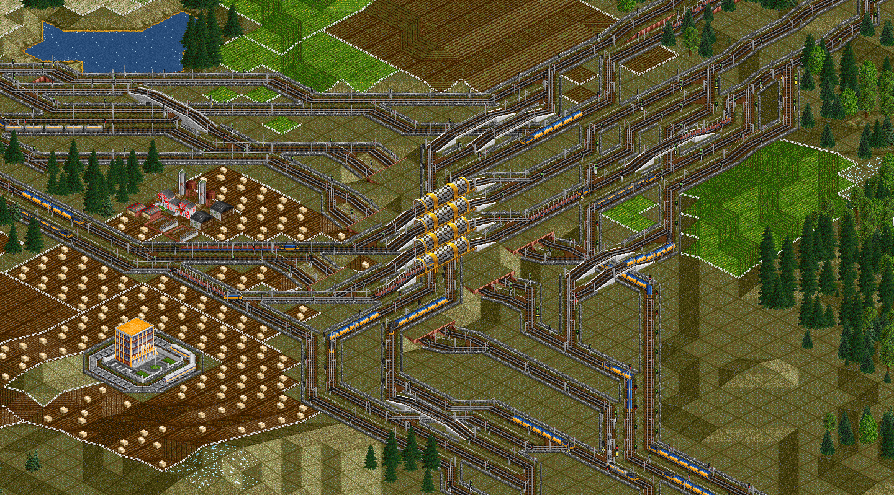

Splits
Usually the part which is easiest. You just split lines from each direction. In this case, you can play with the actual order – if you split outer line first or outer, or both lines inside. Another decision-time comes when you bridge/tunnel the ML, or the split line.
Bridge vs. Tunnel
How old this conflict is? Like ancient and eternal … in splits it is probably most significant. As seen in the image below, you can save a lot of space with bridges made like this. Also, it is highly friendly with presignals which are just best unless you want to prio the bridges ;). 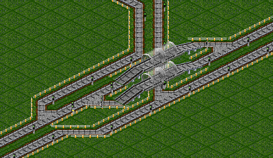
The basic rule of splits is “just use anything to get those lines away”.

Mergers
Something like a mirror-difference from splits. The hardest, most key thing mostly defining how the hub will actually look. (if you plan to build a good one) This paragraph will focus on systematic styles of mergers, not entirely the technique how they are built … because that would be just endless topic. 🙂 The point is that basically any merger could work… the question is if you are lucky enough and the traffic goes just like you wanted. This leads to considering absolute balancing as an ideal case, but in many games, some “less” balanced mergers are just fine.
Not balancing “merge”
Balancing … why do we need balancing when this works? Note that if this ever worked, then it is ONLY a matter of luck that trains come from the right lines. If one relies on merging “outer with outer” and “inner with inner” or anyhow similarly like being smart and joining “outer with inner” and “inner with “outer: etc., it still is not balanced, thus relies on luck where trains come from. The greatest fail comes when you get to high amount of lines and you try to swap the lines where trains come just based on where you feel traffic demands it. Now end about such “mergers” and let’s get to something more serious ;).
Fully Prioritized Merge
As a Full priority I take such prio that gives absolute way – therefore preventing any slowdowns on ML by the joining trains.
This basically means that an amount of lines join others, giving them absolute prority. A style of joins typical for SLHs where we just want the SL trains give way to the ML ones. Although some people use these things also on BBHs and MSHs. Note that I am not saying it is a mistake! All matters on how you do it, the situation you are in, and so on.
Fully Prioritized Merge joining all lines
This is common for SLHs. One line joins all others. Typically looks like this. (for any amount of ML lines, just multiply/expand the design – also, when expanding you should toy with the waiting bays so it performs best) Here goes an example… joining only 2 lines. 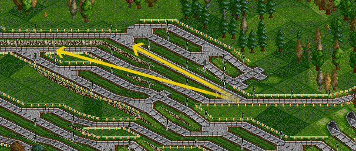

Multi-to-multi-line join style
This implies that you want to give all joining lines an access to all of the joined lines. This is practically doable only with 2line join if we are talking about any reasonably simple and compact merger. Again, there are many techniques how to do this, but one note to be highlighted is: care about signals, making sensitive gaps is really needed in order to reach maximum throughput. 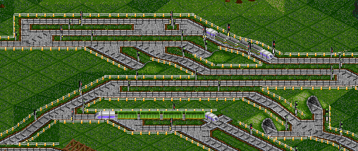

Fully Prioritized Merge joining some lines
This is often used when more lines join more lines. Typical examples in PZ05. The only “not ideal” thing is that again, it doesn’t balance completely, but well … you want to balance 4->8? 😀 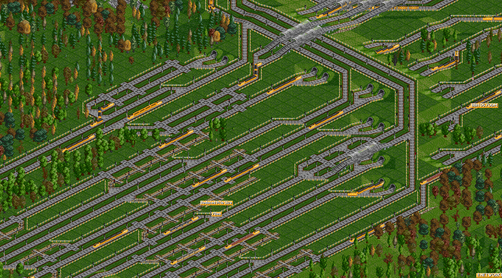

Half Prioritized Merge
This merging style would mean for me that I am merging two equally important lines. We have some priorities in order to make them choose lines better, but we do not have full priorities because it could make trains be stuck in them for too long. 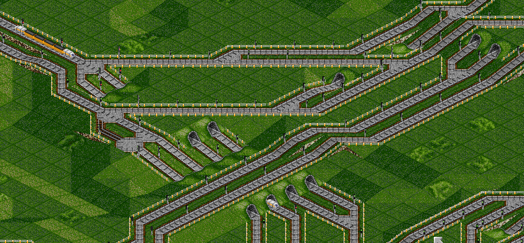
This is typical for All-to-all balancers.
Here we can see a very smart solution by Mark. Using a prio that would be normally considered broken, because only one of these tunnels is prioritized.

All-to-all Merge
There have been quite a few forms of a merger that allows all entering lines all possible exits. These mergers are easy to build because they have quite a systematic look, they are pretty simple and they fit all forms, from 4->2 to X->Y. You can use this design with some priorities or without them. Under heavier loads the trains that join later can have trouble with joining if there are some priorities. Note the PF traps behind the merger. This makes balancing a bit better because it reduces train preferences of one or other line.(I do not want to say the PF traps are needed, they only are a good thing to be considered.) 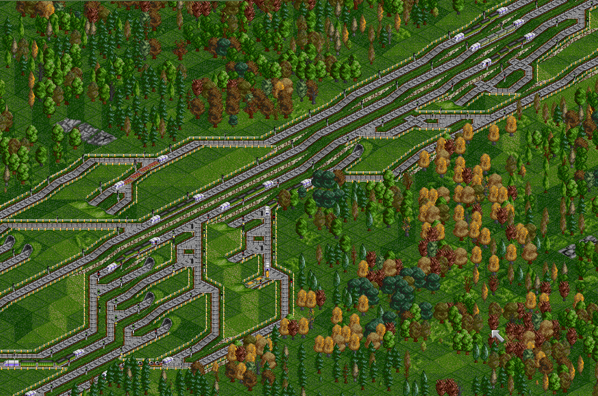

Hub Composition
Although we still use similar things to “ultimate 3way”, there still are some techniques and styles, how to save space and keep throughput. Most of these things is smart usage of tunnels and bridges, and well … creatively pulling hub parts together by knowing which parts you are going to use (this also involves for example expecting high priorities, thus saving space for them) and working with terrain.
Bridge & Tunnel abuse
A super-powerful move while building hubs is using 3level tracks correctly (tunnel – rail – bridge). In general, bridges are good because they are more compact, but on the other hand, can not go under anything. On the other hand tunnels are harder to place, more space-demanding, but are able to go under for example a power plant or signal transmitter wall in the middle of your hub.
Multi-levels
In my example game I used only tunnels to make it a bit harder, so the demonstration of what to do is more significant and easier to replicate when you have both bridges and tunnels available, therefore I think more educational ;). (Note: tunnels still can go under each other if you have them in different levels! It only is much harder than bridge over tunnel. Theoretically, you could make Nlevel thanks to Ntunnel-tunnel-rail-bridge … but that would in most cases result in too large tunnels … anyways, it is also a possibility to be considered.) 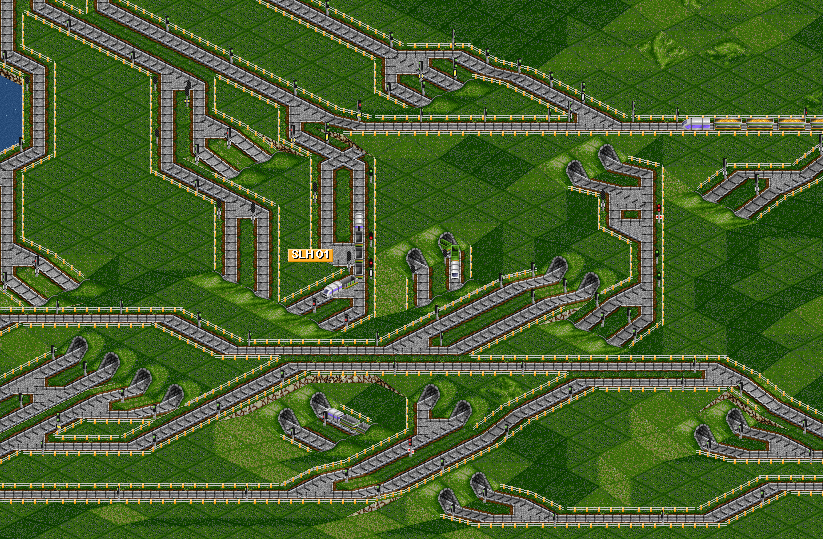 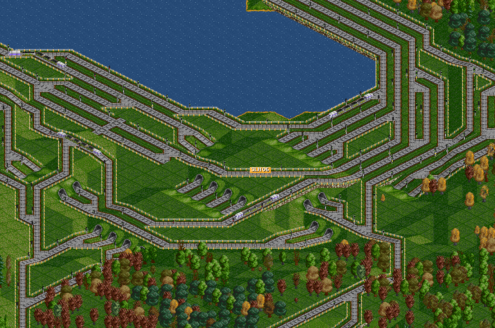 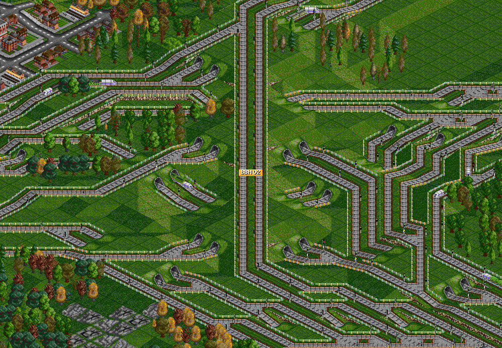
Here come some examples of dealing with 3levels… BBH02 is particularly interesting because it does not keep the lines going the same direction together.


Directional Tunnels
This is quite a classic technique how to keep hub systematic and clean. Because you decide you will bridge the straight line still and still, you save some space in the other direction. This is usually done by “making parts” of hub and bringing them close together, resulting in each part having it’s tunnel. 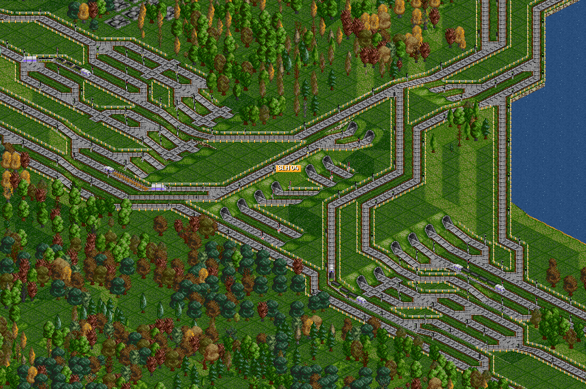

Joining bridges together
The art of this style (also applies for other styles) where casual hub differs from a masterpiece, often is the ability to merge some “parts” together, making them for example both on one tunnel. This can for example save a lot of space. The basic point is you try to use as long tunnels as possible, and stuff there as much things as possible. This can be positively influenced by higher TL, because you can use even longer tunnels. The problem is – curves eat the space back. 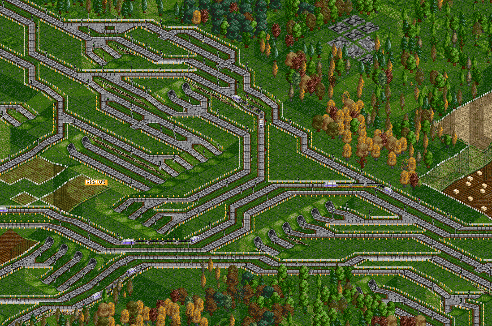

Hub Operation
The most important thing is how the actual hub works. This is usually only influenced by the mergers. Since I have already noted some kinds of mergers and what situation they fit, I will not repeat it again and I will just show some interesting usages. (these are just examples to show what I mean, I can’t possibly show everything)
Merger Logics
This is a hub that leads mainly to the goods drop. ML is from A to B, C is the goods exit. What I want to show here is not just usage of mergers by type of hub or how it fits the landscape, but also how they work. See that while trains coming from the goods drop give priority on the A and B joins to the ML, while they merge equally on merge C. Definitely a good point to consider – think how is the hub actually be used. 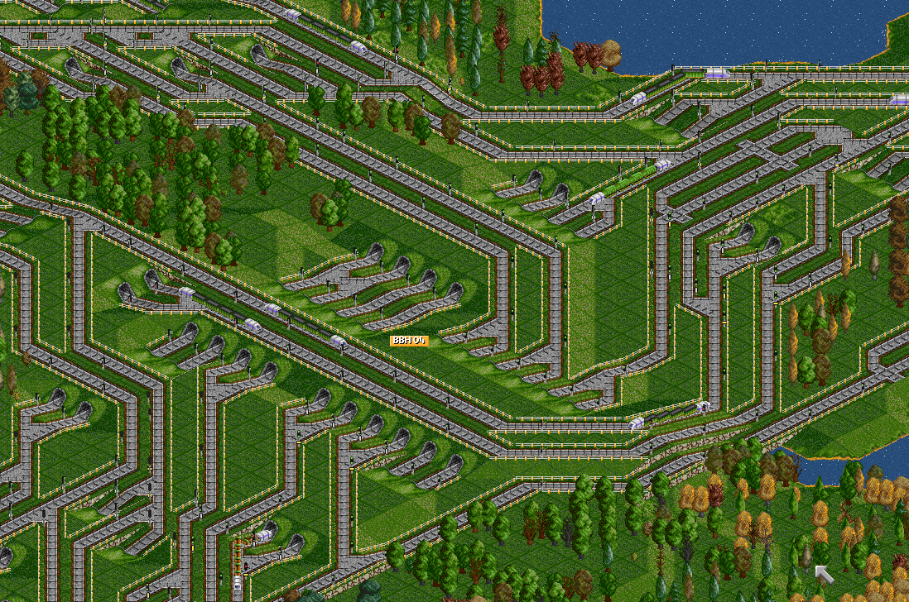

Shifters and hubs
SML hubs are never very popular because they are just huge, so I will ignore these. I rather want to mention an idea I came up with … that is “simplification” of balancing. In MSH 01, I have built a balancer where trains from A have one track prioritized and one giving way (B). Of course entering the balancer from the way where you got to choose and give way to others is uncomfortable. Therefore we can shift trains (C) from that line to the “already joined” one. This is especially useful with badly accelerating trains because trains join the line without stopping. I used it only for LL_RR hub, but it could be used even in larger scales, having for example LLLL_RRRR coming from each side, you could shift and ignore those tracks in further balancing, making the mergers smaller and simplier. (note that I tried to place the shifters inside hubs, therefore adding no more space, but stuffing them there 🙂 ) 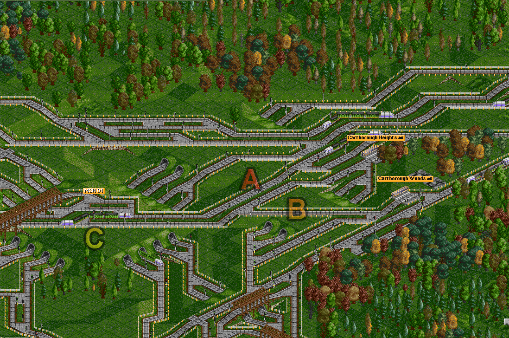

Conclusion
If I try to conclude what I have just said, then it is: Building a hub is considering possibilities, pulling the right strings, sacrificing the space on one side for more space somewhere else. Build hubs not “as always” but know what you want from the hub, know what do you expect from it, consider under what circumstances you are, consider how big will it be, think about it’s components and try to mix them together for maximum compactness. Usually the point you want to reach is “have as frequent rails as possible in the hub” – using all of the footprint the hub takes :). All I have written is just a theory but still, most of building is practice, so this guide will not be enough itself ;). Build and develop your own style! 🙂 If you put it all together, you can make a compact, complex and often a great hub that works just great. Now what are you waiting for, go bake someone’s brain off!
Categories: Community News, Gameplay, Tutorial
Destro January 5, 2011 16:59
Great article as always
Rovstam May 4, 2022 21:57
I cant believe i readed all of this without actually realizing how long it was. Amazing writing level.